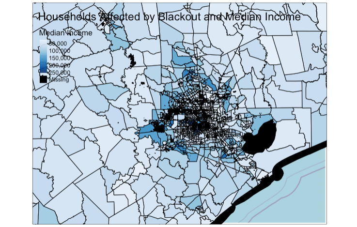
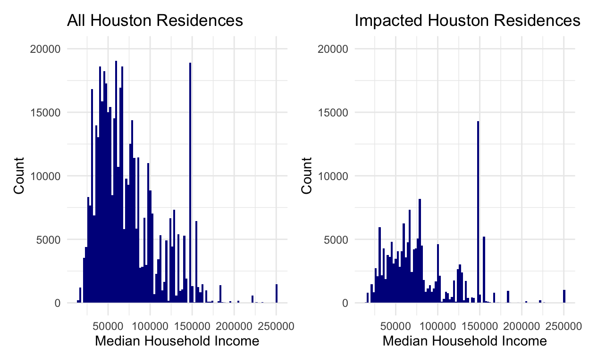

Using night light data from NASA’s Worldview to identify residences in the Houston metropolitan area that lost power during the major blackout in February 2021.
In this assignment for our Spatial Analysis class, we use remotely-sensed light data from NASA’s Worldview to identify residences in the Houston metropolitan area that lost power during the major blackout in February 2021. The goal of the analysis is to:
The data was specifically acquired from the Visible Infrared Imaging Radiometer Suite (VIIRS) on the Suomi satellite. Using highways data from Open Street Map, residences within 200 meters of a major highway were excluded. Residence building count was based on Open Street Map’s buildings data. Lastly, a few socioeconomic indicators from census data is explored for correlations with likelihood of being impacted by the blackout.
read_dnb <- function(file_name) {
# Reads the "DNB_At_Sensor_Radiance_500m" dataset from a VNP46A1 granule into a STARS object.
# Then read the sinolsoidal tile x/y positions and adjust the STARS dimensions (extent+delta)
# The name of the dataset holding the nightlight band in the granule
dataset_name <- "//HDFEOS/GRIDS/VNP_Grid_DNB/Data_Fields/DNB_At_Sensor_Radiance_500m"
# From the metadata, we pull out a string containing the horizontal and vertical tile index
h_string <- gdal_metadata(file_name)[199]
v_string <- gdal_metadata(file_name)[219]
# We parse the h/v string to pull out the integer number of h and v
tile_h <- as.integer(str_split(h_string, "=", simplify = TRUE)[[2]])
tile_v <- as.integer(str_split(v_string, "=", simplify = TRUE)[[2]])
# From the h/v tile grid position, we get the offset and the extent
west <- (10 * tile_h) - 180
north <- 90 - (10 * tile_v)
east <- west + 10
south <- north - 10
# A tile is 10 degrees and has 2400x2400 grid cells
delta <- 10 / 2400
# Reading the dataset
dnb <- read_stars(file_name, sub = dataset_name)
# Setting the CRS and applying offsets and deltas
st_crs(dnb) <- st_crs(4326)
st_dimensions(dnb)$x$delta <- delta
st_dimensions(dnb)$x$offset <- west
st_dimensions(dnb)$y$delta <- -delta
st_dimensions(dnb)$y$offset <- north
return(dnb)
}
Next we load the four tiles that give us a complete image of Houston
on 2021-02-07 and 2021-02-16. We save the tiles under the naming
convention tilenumber_mm_dd.
file_name <- "data/VNP46A1/VNP46A1.A2021038.h08v05.001.2021039064328.h5"
t05_02_07 <- read_dnb(file_name = file_name)
//HDFEOS/GRIDS/VNP_Grid_DNB/Data_Fields/DNB_At_Sensor_Radiance_500m, file_name <- "data/VNP46A1/VNP46A1.A2021038.h08v06.001.2021039064329.h5"
t06_02_07 <- read_dnb(file_name = file_name)
//HDFEOS/GRIDS/VNP_Grid_DNB/Data_Fields/DNB_At_Sensor_Radiance_500m, file_name <- "data/VNP46A1/VNP46A1.A2021047.h08v05.001.2021048091106.h5"
t05_02_16 <- read_dnb(file_name = file_name)
//HDFEOS/GRIDS/VNP_Grid_DNB/Data_Fields/DNB_At_Sensor_Radiance_500m, file_name <- "data/VNP46A1/VNP46A1.A2021047.h08v06.001.2021048091105.h5"
t06_02_16 <- read_dnb(file_name = file_name)
//HDFEOS/GRIDS/VNP_Grid_DNB/Data_Fields/DNB_At_Sensor_Radiance_500m, st_mosaic() is used to combine the tiles for each day to
provide a complete picture of Houston on each day, then we use
rm() to clear the large original tiles.
used (Mb) gc trigger (Mb) limit (Mb) max used (Mb)
Ncells 2823284 150.8 4537211 242.4 NA 4537211 242.4
Vcells 26971733 205.8 63966646 488.1 16384 61692780 470.7To create a blackout mask, we identify cells where the difference in DNB between 2021-02-07 and 2021-02-16 is greater than 200 nW cm^-2 sr^-1. Where the difference is less than this threshold, we assign a value of NA.
used (Mb) gc trigger (Mb) limit (Mb) max used (Mb)
Ncells 2824193 150.9 4537211 242.4 NA 4537211 242.4
Vcells 9693966 74.0 54104736 412.8 16384 67630920 516.0We use st_as_sf() to vectorize the blackout mask and
then st_make_valid() to repair the geometries of some of
the polygons in the resulting vectorized mask.
difference_mask <- st_as_sf(difference_mask)
difference_mask <- st_make_valid(difference_mask)
We create a bounding box of the Houston metropolitan area and then give it a CRS of WGS 84 (for the time being).
Using our bounding box, we create a cropped difference mask by
keeping only the values of the cells that intersect the bounding box,
then we use st_transform() to give the cropped data a
projected CRS of NAD83/Texas Centric Albers.
intersects <- st_intersects(difference_mask, roi, sparse = FALSE)
cropped = difference_mask[intersects,]
crs = st_crs(3083)
cropped = st_transform(cropped, crs)
rm(difference_mask)
gc()
used (Mb) gc trigger (Mb) limit (Mb) max used (Mb)
Ncells 3060540 163.5 4537211 242.4 NA 4537211 242.4
Vcells 4454639 34.0 110598994 843.9 16384 133455011 1018.2We use the SQL query provided to us from the class to read in the
data where the column fclass is “motorway” in the OSM roads
dataset.
query_r <- "SELECT * FROM gis_osm_roads_free_1 WHERE fclass='motorway'"
highways <- st_read("data/gis_osm_roads_free_1.gpkg", query = query_r)
Reading query `SELECT * FROM gis_osm_roads_free_1 WHERE fclass='motorway'' from data source `/Users/Joe/Documents/Bren/Website/joedecesaro.github.io/_posts/2022-05-07-houston-blackout-analysis/data/gis_osm_roads_free_1.gpkg'
using driver `GPKG'
Simple feature collection with 6085 features and 10 fields
Geometry type: LINESTRING
Dimension: XY
Bounding box: xmin: -96.50429 ymin: 29.00174 xmax: -94.39619 ymax: 30.50886
Geodetic CRS: WGS 84Next, we use st_transform() to reproject the data to
NAD83/Texas Centric Albers, then create a buffer of 200 m around the
highways.
#st_crs(highways)
highways = st_transform(highways, crs)
highways_buffered = st_union(st_buffer(highways, dist = 200))
rm(highways)
gc()
used (Mb) gc trigger (Mb) limit (Mb) max used (Mb)
Ncells 2916706 155.8 4537211 242.4 NA 4537211 242.4
Vcells 4284814 32.7 88479196 675.1 16384 133455011 1018.2We use the SQL query provided to us in homework 2 to identify and read in the data where the type is NULL and name is NULL, or where the type is “residential”, “apartments”, “house”, “static_caravan”, or “detached” from the OSM buildings dataset to acquire data of residences in the Houston area.
query_b <- "SELECT *
FROM gis_osm_buildings_a_free_1
WHERE (type IS NULL AND name IS NULL)
OR type in ('residential', 'apartments', 'house', 'static_caravan', 'detached')"
residences <- st_read("data/gis_osm_buildings_a_free_1.gpkg", query = query_b)
Reading query `SELECT *
FROM gis_osm_buildings_a_free_1
WHERE (type IS NULL AND name IS NULL)
OR type in ('residential', 'apartments', 'house', 'static_caravan', 'detached')' from data source `/Users/Joe/Documents/Bren/Website/joedecesaro.github.io/_posts/2022-05-07-houston-blackout-analysis/data/gis_osm_buildings_a_free_1.gpkg'
using driver `GPKG'
Simple feature collection with 475941 features and 5 fields
Geometry type: MULTIPOLYGON
Dimension: XY
Bounding box: xmin: -96.50055 ymin: 29.00344 xmax: -94.53285 ymax: 30.50393
Geodetic CRS: WGS 84Then, we use st_transform() to reproject the residences
data in NAD83/Texas Centric Albers.
residences = st_transform(residences, crs)
#st_crs(residences)
We explore the available census data, then read in the census tract geometries data, as well as income data. We reproject the census tract geometries to NAD83/Texas Centric Albers, and subset the income data to keep the median income data.
# st_layers("data/ACS_2019_5YR_TRACT_48_TEXAS.gdb")
acs_geoms <- st_read("data/ACS_2019_5YR_TRACT_48_TEXAS.gdb",
layer = "ACS_2019_5YR_TRACT_48_TEXAS")
Reading layer `ACS_2019_5YR_TRACT_48_TEXAS' from data source
`/Users/Joe/Documents/Bren/Website/joedecesaro.github.io/_posts/2022-05-07-houston-blackout-analysis/data/ACS_2019_5YR_TRACT_48_TEXAS.gdb'
using driver `OpenFileGDB'
Simple feature collection with 5265 features and 15 fields
Geometry type: MULTIPOLYGON
Dimension: XY
Bounding box: xmin: -106.6456 ymin: 25.83716 xmax: -93.50804 ymax: 36.5007
Geodetic CRS: NAD83acs_geoms = st_transform(acs_geoms, crs)
acs_income <- st_read("data/ACS_2019_5YR_TRACT_48_TEXAS.gdb",
layer = "X19_INCOME")
Reading layer `X19_INCOME' from data source
`/Users/Joe/Documents/Bren/Website/joedecesaro.github.io/_posts/2022-05-07-houston-blackout-analysis/data/ACS_2019_5YR_TRACT_48_TEXAS.gdb'
using driver `OpenFileGDB' used (Mb) gc trigger (Mb) limit (Mb) max used (Mb)
Ncells 6804540 363.5 15204982 812.1 NA 15204982 812.1
Vcells 26640844 203.3 70783357 540.1 16384 133455011 1018.2We remove the buffered highways from the blacked out night lights
data using st_difference(), then use
st_intersects to find buildings within the blacked out
night lights data that were affected by the blackout.
cropped_no_highways <- st_difference(cropped, highways_buffered)
affected_buildings <- residences[cropped_no_highways, op = st_intersects]
We use a left join to merge the census data with the census tract
geometries, using their shared information in the columns
GEOID_Data and GEOID.
used (Mb) gc trigger (Mb) limit (Mb) max used (Mb)
Ncells 6861241 366.5 15204982 812.1 NA 15204982 812.1
Vcells 27814783 212.3 70783357 540.1 16384 133455011 1018.2First we map median income by census tracts with residences affected by the blackout:
#Bounding box and basemap
houston_bb <- st_bbox(roi)
houston_map <- osm.raster(houston_bb)
# tmap::tmap_mode(mode = "plot")
#
# #Creating the map
# tm_shape(houston_map) +
# tm_rgb() +
# tm_shape(acs_geom_income,
# bbox = houston_bb) +
# tm_polygons(col = "B19013e1",
# title = "Median Income",
# colorNA = "black",
# style = "cont",
# palette = "Blues") +
# tm_shape(affected_buildings,
# bbox = houston_bb) +
# tm_polygons() + tm_style("col_blind") +
# tm_layout(title = "Households Affected by Blackout and Median Income")
 Note: the figure above was originally designed to be interactive but this was changed for this post due to excessive load times.
Figure 1. Exploratory map showing median household income by census tract (dark blue = high income), overlaid with locations of residences that lost power during the February blackout. Data is from Open Street Map and NASA’s Worldview.
That looks interesting but it’s hard to identify patterns. It does appear thata large cluster of homes in two census tracts in western Houston lost power. This is a extreme concentration of homes that lost power compared to other areas.Now we make a histogram of median income for all households in the Houston metropolitan area to compare with a histogram of median income for households impacted by the blackout:
residences_income <- st_join(residences, acs_geom_income, join = st_intersects)
impacted_residences_income <- residences_income[cropped_no_highways, op = st_intersects]
patchwork:#All residences
histogram_residences_income <- ggplot(residences_income) +
geom_histogram(aes(x = residences_income$B19013e1), bins = 100, fill = "darkblue") +
labs(title = "All Houston Residences",
x = "Median Household Income",
y = "Count") +
theme_minimal() +
scale_y_discrete(limits = c(5000,10000,15000,20000)) +
ylim(c(0, 20000))
#Impacted residences
histogram_impacted_income <- ggplot(impacted_residences_income) +
geom_histogram(aes(x = impacted_residences_income$B19013e1), bins = 100, fill = "darkblue") +
labs(title = "Impacted Houston Residences",
x = "Median Household Income",
y = "Count") +
theme_minimal() +
scale_y_discrete(limits = c(5000,10000,15000,20000)) +
ylim(c(0, 20000))
histogram_residences_income + histogram_impacted_income

Figure 2. Histogram showing the number of homes by census tract median household income in the Houston metropolitan area (left) and the number of homes impacted during the blackout by census tract median household income (right). Data is from Open Street Map and NASA’s Worldview.
The impacted residences histogram shows relatively fewer low income households impacted compared to the density of low income households in the total area. Though the number of impacted high income households is lower than the total high income households, it appears to be relatively higher than impacted low income households. Interestingly, income may be positively correlated with likelihood of being impacted. However,this could be due to the aforementioned census tract areas where a large percent of houses lost power.
More than 150,000 residences lost power during the February blackout in the Houston area alone. This is likely an underestimate, as residences may have been excluded due to our highways buffer, interference in the satellite from clouds or other atmospheric differences, or due to our exclusion of cells where the difference was not greater than 200 nW cm^-2 sr^-1. The socioeconomic factor that we examined, median income, is not clearly correlated with likelihood of being impacted by the blackout, though there may be a slight positive correlation between income and likelihood. We also explored census race data for white only households but there was no obvious correlation between a household being white and likelihood of losing power. The race data exploration and download code was removed from this document so that the markdown was more streamlined and did not overburden the computers.However, other socioeconomic factors that we did not examine may have been more strongly correlated.